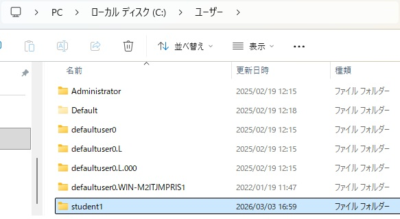
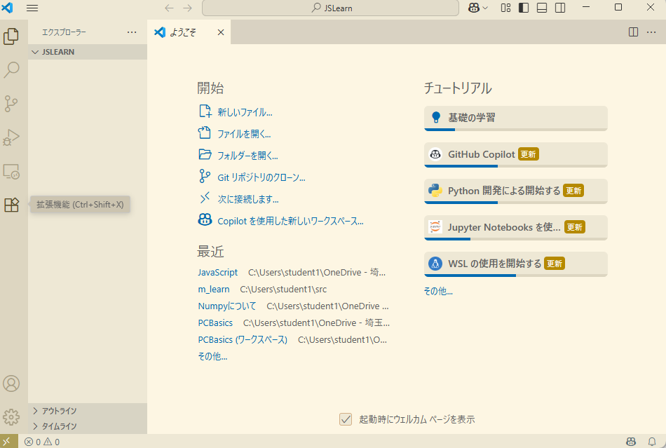
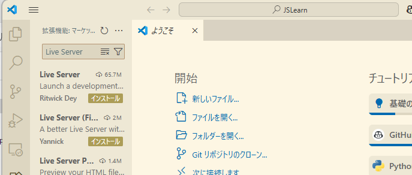
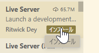
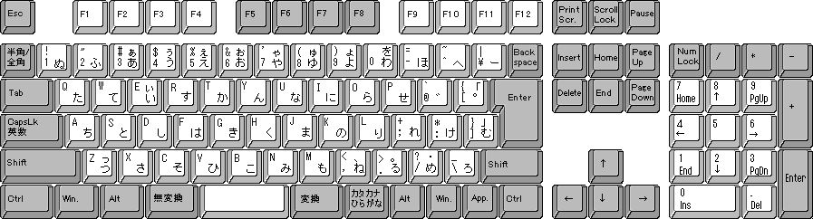

I. はじめてのウェブサイト
1. はじめに：ウェブ開発の世界へようこそ
みなさん、こんにちは！ ウェブサイトを作ってみたいと思ったことはありますか？ 今の社会では、自分の考えや情報を世界に伝えるために、ウェブサイトを作る技術はとても大きな力になります。
特に留学生のみなさんにとって、ウェブサイトは「言葉の壁（かべ）」をこえるための強い味方です。完全な日本語を話すのが難しくても、ウェブサイトなら写真やデザイン、図を使って、あなたの魅力（みりょく）や才能を視覚的に伝えることができます。
「ウェブ開発は難しそう……」と感じるかもしれません。確かに、Facebook（フェイスブック）のような複雑なサイトを、いきなり一人で作ることは難しいです。しかし、安心してください。自分だけのシンプルなウェブサイトなら、少しずつ進むことで、誰でも作ることができます。
このガイドでは、ウェブサイトがどのように動いているのか、そしてどうすれば自分の作品を世界に広めることができるのかを、やさしく解説します。自分で情報を広める力を身につけることは、将来の仕事や自分を表現するために、必ず素晴らしいプラスになるはずです。
準備はいいですか？ まずは、スタートするために必要なものを確認しましょう。
Note
この資料はMDNの「Your first website」をやさしい日本語にしたものです。
2. 準備するもの：スタートラインに立つ
実際にコード（コンピュータへの命令）を書き始める前に、自分のコンピュータで作業ができる準備をすることが大切です。これを「環境構築（かんきょうこうちく / パソコンでサイトを作るための準備）」と呼びます。
まず、以下の3つのことがスムーズにできるか確認してください。
- OS（オペレーティングシステム）の操作： WindowsやmacOSなどの基本的な使い方がわかる。
- ファイルシステムの理解： ファイルを保存したり、フォルダを作って整理したりできる。
- ブラウザの利用： インターネットで検索をしたり、サイトを見たりできる。
Note
「2. ファイルシステムの理解」に自信のない人は、補足資料集の「ファイルとフォルダの基本」を見てください
次に、以下の「道具」を用意しましょう。
- コードエディター： プログラムのコードを書くための専用ソフトです。Visual Studio Codeを使います。すでに皆さんのPCにインストールされています。
- ウェブブラウザ： 主にGoogle Chrome を使います。こちらもんストール済みです。
道具がそろったら、次は「どんなサイトを作るか」という計画を立てるステップです。
3. 計画を立てる：サイトの見た目を決める
いきなりコードを書き始めるのは、設計図なしで家を建てるようなものです。まずは「計画」から始めましょう。最初にしっかり計画を立てることで、作業の途中で迷わなくなり、結果として「情報の整理された見やすいサイト」を作ることができます。
計画を立てるときは、以下のポイントを整理してみてください。
- どんな情報を載せるか： 誰に、何を伝えたいですか？（自己紹介、趣味の紹介など）
- どんなフォントや色を使うか： 明るいイメージですか？ それともクールで落ち着いたイメージですか？
見た目のイメージが固まったら、いよいよサイトの「中身（文章）」と「形」を作っていく工程に入ります。
Note
見た目（みため）: 外から見た物事（ものごと）のありさま （例 その車は 見た目 は美しいが中身は壊れている）
4. サイトの「3つの要素」：HTML、CSS、JavaScript
ウェブサイトは、主に3つの技術が組み合わさってできています。これを「家づくり」に例えて見てみましょう。
| 技術名 | 役割（家の例え） | 詳しい説明 |
|---|---|---|
| HTML | 構造 | 段落、リスト、画像など、コンテンツの「意味」や「土台」を作ります。 |
| CSS | 見た目（かざり） | 色、サイズ、配置、背景など、サイトを「美しく」整えます。 |
| JavaScript | 動き | ボタンの反応、アニメーション、ゲームなど「便利な機能」を加えます。 |
これらの技術は、どれか一つ欠けてもうまくいきません。たとえば、HTMLだけでは文字が並んでいるだけで読みにくく、CSSがないとデザインがバラバラになります。また、JavaScriptがないと動きのない静かなサイトになってしまいます。
これらを正しく組み合わせることで、ユーザーにとって「読みやすく」「使いやすく」「楽しい」ウェブサイトが完成するのです。
Note
段落（だんらく）：長い文章を内容などから分けた、言葉の集まり
Note
リスト：複数の項目や要素を集めたもの
Note
画像（がぞう）：写真や絵など
5. 世界へ公開する：パブリッシング
自分のパソコンで作ったファイルは、そのままでは自分にしか見ることができません。これをインターネット上にアップロードして、世界中の誰でも見られる状態にすることを「公開（パブリッシング）」と言います。
公開の手順をシンプルにまとめると、以下のようになります。
- コードを書き終える： HTML、CSS、JavaScriptを完成させます。
- ファイルを整理する： 画像やコードのファイルを正しいフォルダにまとめます。
- オンラインにアップロードする： 「サーバー」と呼ばれる、インターネット上の場所へファイルを送ります。
Note
授業では、このステップは実施しません。興味のある方は、ここをクリックしてMDNの関連サイトを参照してください。
6. まとめと次のステップ
ここまで、ウェブサイト制作の全体像を見てきました。ウェブ開発の学習は、一度で完璧（かんぺき）にする必要はありません。小さな「できた！」を積み重ねていくプロセスそのものが大切です。
II. デザインと計画のガイドブック
ウェブサイトを作るとき、いきなりパソコンでコード（プログラムの言葉）を書き始めるのは、おすすめしません。まずは「計画（プランニング）」をしましょう。
このガイドブックでは、ウェブ開発の専門家が、留学生のみなさんにも分かりやすい「やさしい日本語」で、サイト作りの準備について教えます。
1. はじめに：なぜ「計画」が大切なのか
家を建てるときに「設計図（せっけいず）」が必要なように、ウェブサイトにも計画が必要です。コードを書く前に計画を立てるのには、大きな理由があります。
- 「作り直し（リワーク）」をふせぐ： 何も決めずに作ると、あとで「やっぱり違う！」となって、時間をむだにしてしまいます。
- 最後まで完成（かんせい）できる： 最初にやることを決めると、迷わずに最後まで作ることができます。
計画を立てることは、プロのエンジニアも一番大切にしているステップです。
2. ウェブサイトの目的を整理する
最初のプロジェクトでは、内容（ないよう）を「シンプル」にすることが成功のヒミツです。大きすぎる目標を立てると、途中で嫌になって諦めてしまうからです。
まずは、次の3つの質問に答えてみましょう。
- このサイトは何についてのサイトですか？ （例：好きな犬について、旅行したニューヨークについて、パックマン（Pac-Man）についてなど）
- どんな情報を紹介しますか？ （ウェブサイトの名前を決めましょう。そして、1つの「見出し（タイトル）」、1つの「画像」、2〜3個の「段落（だんらく／短い文章）」を考えてください）
- どんな見た目のサイトにしますか？ （背景は何色がいいですか？ 文字の形は「まじめ」ですか？ それとも「かわいい」ですか？）
専門家の知恵：デザインガイド
大きなプロジェクトでは、「デザインガイド（デザインシステム）」というルールブックを作ります。例えば、Firefoxには「Firefox Acorn Design System」という有名なガイドがあります。これを見ると、プロがどうやって「色」や「文字」のルールを統一（とういつ）して、きれいに見せているかが分かります。
目的が決まったら、次はそれを絵に描いてみましょう。
3. デザインのスケッチ：見た目のイメージを作る
ペンと紙を使って、サイトの形を自由に描いてみましょう。これを「スケッチ」と言います。
プロも、最初はパソコンを使わず、紙に書くことから始めます。ここで大切なのは、「完璧（かんぺき）を目指さないこと」 です。有名な画家のゴッホ（Van Gogh）のように上手に描く必要はありません。どこにタイトルがあり、どこに画像があるか、自分が分かれば十分です。
また、ウェブ制作の現場には、2つの役割があります。
デザイナーの種類 どんな仕事をする人？ グラフィックデザイナー ウェブサイトの 見（み）た目（め）を きれいに デザインする 人 UXデザイナー ユーザーが ボタンを 押（お）しやすくしたり、情報（じょうほう）を 見（み）つけやすくしたりする 人
今は、あなたがこの両方の仕事をします。自分のアイデアを自由に紙に書いてみてください。
4. テーマカラー（色の名前とコード）を決める
サイトの印象を決める「色」を選びましょう。
- 色を選ぶ： カラーピッカーなどのツールで、背景（はいけい）に使いたい色を探します。
- コードをメモする： 色を選ぶと、#660066 のような「6つの英数字」が表示されます。これを 16進数コード（hex code／ヘックスコード） と呼びます。
16進数コード（hex code）とは
コンピュータが「この色です！」と正しく理解するための専用の番号です。あとでコードを書くときに使うので、必ずメモしておきましょう。
5. 画像の準備：ルールを守って探す方法
インターネットにある画像には「持ち主」がいます。これを 著作権（コピーライト） と言います。勝手に使うと法律（ほうりつ）のトラブルになることがあるので、注意してください。
「自由に使ってもいい画像」をGoogleで探す方法は、次の通りです。
- Google画像検索を使う： 好きな言葉で検索します。
- ツールを使う： 検索結果の画面にある「ツール」ボタンをクリックします。
- ライセンスを選ぶ： その下に表示される「使用権（しようけん）」をクリックし、「クリエイティブ・コモンズ ライセンス」を選びます。
- 保存する： 好きな画像を見つけたら、右クリック（Macは Ctrl + クリック）をして、「名前を付けて画像を保存」を選びます。
6. フォント（文字の形）の選択
フォントには2つのタイプがあります。
- ウェブセーフフォント： どのパソコンにも最初から入っている安心なフォントです（例：Arial, Times New Roman）。
- Google Fonts： デザイン性が高いフォントを無料で借りられるサービスです。
ここでは、Google Fontsを使う手順を説明します。
- Google Fontsへ行く： サイトのイメージに合うフォントを探します。
- コードを取得する： 好きなフォントを選び、「Get font」ボタンを押してから、「Get embed code（埋め込みコードを取得）」をクリックします。
- 2つのコードを保存する： 画面に表示された 2つのコードブロック（2つのまとまったコード） を両方ともコピーして、メモ帳などに保存してください。フォントを動かすには、この2つが両方必要です。
⚠️ 注意：商業利用（しょうぎょうりよう）について フォントにもライセンスがあります。勉強で使うのは大丈夫ですが、将来、仕事でサイトを作るときは、必ず「商売（ビジネス）で使ってもいいか」を確認しましょう。
7. まとめと次のステップ
お疲れ様でした！これで「サイトの設計図」と「素材（そざい）」がすべて揃いました。
- 計画： どんな内容にするか決めた。
- スケッチ： レイアウトを紙に書いた。
- 素材： 色のコード、画像、フォントの準備ができた。
しっかりとした「土台（どだい）」ができたので、次のステップである「HTMLやCSSを書く作業」を、自信を持って進めることができます。
準備はバッチリです。さあ、次は実際にコンピュータで、あなただけのウェブサイトを形にしていきましょう！
III. ウェブサイトの形を作ろう
ウェブサイトを作（つく）るための 最初（さいしょ）の一歩（いっぽ）へ ようこそ！ プログラミングや ウェブ制作（せいさく）を 始（はじ）めるとき、 最初（さいしょ）に 覚（おぼ）えるのが「HTML」です。
HTMLは ウェブサイトの「骨組み（ほねぐみ）」、つまり 構造（こうぞう）を 作（つく）るための 言葉（ことば）です。この 基本（きほん）を 正（ただ）しく 知（し）ることは、ウェブサイトを 作（つく）る プロ（仕事（しごと）を する人（ひと））に なるために、とても 大切（たいせつ）なことです。
1. HTMLとは何？：ウェブの基本を理解する
HTML（HyperText Markup Language） は、テキスト（文字）に「印（しるし）」を つけて、ウェブサイトの 構造（こうぞう）を 作（つく）るための「マークアップ言語（げんご）」です。
HTMLの 役割（やくわり）を わかりやすく 例（たと）えると、「荷物（にもつ）に ラベルを 貼（は）る 作業（さぎょう）」 に 似（に）ています。ただの テキストに「これは 見出しです」「これは 段落（だんらく）です」という ラベルを 貼（は）ることで、ブラウザ（Google Chromeなど）が その意味（いみ）を 理解（りかい）できるようになります。
- 要素（ようそ / Element）とは： テキストを「タグ」と 呼（よ）ばれる 記号（きごう）で 囲（かこ）んだ セットのことです。
- ブラウザへの 伝言（でんごん）： タグを 使うことで、ブラウザに「ここから ここまでが 段落（だんらく）だ」と 伝（つた）えることができます。
HTMLを 使う 理由（りゆう）： もし HTMLが なければ、すべての 文字（もじ）が 一行（いちぎょう）に つながってしまい、とても 読（よ）みにくくなります。また、目（め）が 見（み）えにくい 人（ひと）が 使う「音声（おんせい）読（よ）み上（あ）げソフト」も、どこが 大事（だいじ）な 場所（ばしょ）なのか わからなくなってしまいます。HTMLで 正（ただ）しく 構造（こうぞう）を 作（つく）ることで、誰（だれ）にでも 意味（いみ）が 伝（つた）わる ページに なります。
2. HTMLファイルの基本の形
ウェブページを 正（ただ）しく 動（うご）かすためには、決（き）まった「型（かたち）」が 必要（ひつよう）です。
主要（しゅよう）な 構成要素（こうせいようそ）
MDNの ルールに 基（もと）づいた、基本的（きほんてき）な パーツは 以下の 通（とお）りです。
<!doctype html>：ページを 正（ただ）しく 表示（ひょうじ）させるために、ファイルの 一番（いちばん） 上（うえ）に 書（か）かなければならない ルールです。<html>：ページの すべての 内容（ないよう）を 包（つつ）む「一番（いちばん） 外側（そとがわ）の 箱（はこ）」です。<head>：画面（がめん）には 見（み）えないけれど、ブラウザや 検索（けんさく）エンジンのための 大切（たいせつ）な 情報（情報（じょうほう）/メタデータ）を 入（い）れる 場所（ばしょ）です。<title>：ブラウザの「タブ」に 出（で）る 名前（なまえ）や、ブックマーク（お気に入り）したときの 名前（なまえ）に なります。<body>：実際（じっさい）に ユーザーが 見（み）る コンテンツ（文章（ぶんしょう）や 画像（がぞう）など）を すべて 入（い）れる 場所（ばしょ）です。
メタデータ（大切（たいせつ）な 設定（せってい））の 価値（かち）
<head>の 中（なか）には、以下の ような 設定（せってい）を 書（か）きます。
- 文字（もじ）コード（UTF-8）： これを 書（か）かないと、日本語（にほんご）などが 変（へん）な 記号（きごう）に なる「文字化け（もんじばけ）」が 起（お）きることが あります。
- ビューポート（viewport）： スマートフォンの 画面（がめん）サイズに 合（あ）わせて、きれいに 表示（ひょうじ）するために 必要（ひつよう）です。
タグの 構造（こうぞう）：入れ子（いれこ）
HTMLは「タグの 中（なか）に 別の タグが 入（はい）る」という「入れ子（いれこ）」の 形（かたち）に なります。
<html> <!--一番外側の箱-->
<head> <!--ブラウザのための情報の箱-->
<title> ページの名前 </title>
</head>
<body> <!--私たちが見る中身の箱-->
<h1> タイトル </h1>
<p> 文章（ぶんしょう）の 段落（だんらく） </p>
</body>
</html>
3. テキストに意味をつける：見出し、段落、リスト
文章（ぶんしょう）を 分（わ）かりやすくするために、適切（てきせつ）な タグを 使（つか）います。
- 見出し（
<h1>〜<h6>）： 本の「タイトル」や「章（しょう）」の ように、情報（じょうほう）の 優先順位（ゆうせんじゅんい）を 示（しめ）します。<h1>が 最（もっと）も 重要（じゅうよう）な タイトルで、数字（すうじ）が 大（おお）きくなるほど 小（ちい）さな 見出しに なります。 - 段落（
<p>）： ふつうの 文章（ぶんしょう）を まとめるための タグです。 - リスト（箇条書き）：
<ul>（順序（じゅんじょ）なしリスト）： 買い物（かいもの）リストの ように、順番（じゅんばん）が 関係（かんけい）ないときに 使（つか）います。<ol>（順序（じゅんじょ）ありリスト）： 料理（りょうり）の 手順（てじゅん）の ように、順番（じゅんばん）が 大切（たいせつ）なときに 使（つか）います。- ※どちらも、中身（なかみ）の 項目（こうもく）は
<li>タグで 囲（かこ）みます。
HTMLコメント（<!-- -->）の メリット： コードの 中（なか）に <!-- メモ --> と 書（か）くと、ブラウザには 表示（ひょうじ）されません。これは「自分（じぶん）や 仲間（なかま）」のための メモです。あとで 見直（みなお）したときに、何（なに）をしたのか すぐに わかるように なります。
4. 画像を 表示する：<img>要素の使い方
画像（がぞう）を 表示（ひょうじ）するには <img> 要素（ようそ）を 使（つか）います。
- src属性（ぞくせい）： 画像（がぞう）が ある 場所（ばしょ / パス）を 指定（してい）します。
- alt属性（ぞくせい）： 画像（がぞう）の 説明（せつめい）を 文字（もじ）で 書（か）きます。
- 重要性（じゅうようせい）： 目（め）が 不自由（ふじゆう）な 人（ひと）が 使う ソフトが この文字を 読（よ）み上（あ）げます。また、画像（がぞう）が エラーで 出（で）ないときにも 代（か）わりに 表示（ひょうじ）されます。
- 良（よ）い 例（れい）： alt=“Firefoxのロゴ：地球を包む燃えるキツネ” の ように、何（なに）が 書（か）いてあるか 具体的（ぐたいてき）に 書（か）くのが 正（ただ）しい 使い方（つかいかた）です。
空要素（そらようそ / void element）： <img> は 文章（ぶんしょう）を 囲（かこ）まないので、終（お）わりの タグ（</img>）が いりません。これを「空要素（そらようそ）」と 呼（よ）びます。
ファイル管理（かんり）のアドバイス： 画像（がぞう）は images/ という 名前（なまえ）の フォルダを 作（つく）って、その中に 入（い）れましょう。HTMLからは src="images/写真の名前.jpg" の ように 指定（してい）します。こうすることで、たくさんの ファイルを きれいに 整理（せいり）できます。
5. リンクを作ってページをつなぐ：<a>要素
ウェブ（蜘蛛の巣：くものす）の 名前の 通（とお）り、ページ同士（どうし）を つなぐのが「リンク」です。
リンクの作り方
- リンクに したい テキストを 選（えら）びます。
- その テキストを
<a>タグで 囲（かこ）みます。 - href 属性（ぞくせい）に、行（い）きたい 先（さき）の アドレス（URL）を 書（か）きます。
<a href="https://www.mozilla.org/">Mozillaのウェブサイト</a>
大切（たいせつ）な 注意点（ちゅういてん）： アドレスを 書（か）くときは、必ず https:// などの 通信（つうしん）の ルール（プロトコル） から 書（か）き始（はじ）めてください。これがないと、リンクが 正（ただ）しく 動きません。また、リンクにする 言葉（ことば）は「ここを クリック」ではなく「Mozillaの ウェブサイト」の ように、どこに 行（い）くのか わかる 言葉（ことば）を 選びましょう。
6. まとめ：自分のウェブサイトを作ってみよう
「構造（HTML）」「テキスト」「画像」「リンク」が 組み合わさることで、一（ひと）つの ページが 完成（かんせい）します。
初心者（しょしんしゃ）のための チェックリスト
公開（こうかい）する 前（まえ）に、これを 確認（かくにん）しましょう：
- タグの 閉じ忘れは ありませんか？（
<img>以外（いがい）、終わりのタグが 必要（ひつよう）です） - ファイルの名前は 正（ただ）しいですか？（大文字（おおもじ）と 小文字（こもじ）の 間違（まちが）いは ありませんか？ Index.html と index.html は 違（ちが）います）
- 画像の パス（フォルダの場所）は 正（ただ）しいですか？（images/ フォルダの 中（なか）に 画像（がぞう）が ありますか？）
- リンクの https:// を 忘（わす）れていませんか？
- alt属性は わかりやすく 書（か）きましたか？
次のステップ： HTMLで 形（かたち）が できたら、次は 「CSS」 を 学（まな）んで 色（いろ）や デザインを きれいに しましょう。さらに 「JavaScript」 を 使（つか）えば、動（うご）きのある ページに なります。
IV. ウェブサイトをデザインするCSS
1. はじめに：CSSとは何でしょうか？
ウェブサイトを作るとき、文字や画像などの「内容」を準備するだけでは、まだデザインが完成していません。そこで使われるのが CSS（シーエスエス） です。
CSSは、ウェブサイトの「見た目」を整えるための専用の言葉です。HTMLで作成した文章に色をつけたり、大きさを変えたり、好きな場所に並べたりすることができます。
HTML（内容）とCSS（スタイル）の違い
ウェブサイトは、主に2つの役割が組み合わさってできています。
- HTML（内容）： 「ここにタイトルがある」「ここに文章がある」という、サイトの骨組み（土台）を作ります。
- CSS（スタイル）： 「タイトルを青色にする」「文章の横幅を600ピクセルにする」といった、見た目を美しく飾ります。
CSSを使ってデザインを整えることで、ウェブサイトはもっと読みやすくなり、訪れた人に「使いやすい」と感じてもらえるようになります。
CSSの定義
- スタイルシート言語： プログラミング言語ではなく、見た目を指定するための特別な言葉です。
- 要素（えれめんと）の装飾： HTMLで書かれた特定の場所を選んで、その見た目を変えることができます。
次のセクションでは、CSSを実際にどうやって書くのか、その基本ルールを学びましょう。
2. CSSの書き方（構文）を覚えましょう
CSSを書くときには、決まった形（構文：こうぶん）があります。「どこの」「何を」「どう変えるか」という順番で指示を書きます。
CSSを構成するパーツ
CSSは、以下のパーツを組み合わせて作ります。
- セレクター（選びたい場所）： デザインを変えたいHTMLの要素（タグなど）を指定します。
- プロパティ（変えたい項目）： 色、大きさ、場所など、何を変えるかを選びます。
- 値（あたい：設定する内容）： 具体的にどんな色にするか、どのくらいの大きさにするかを決めます。
宣言とルールセット
CSSでは、プロパティと値を組み合わせたペアを 「宣言（せんげん：Declaration）」と呼びます。そして、セレクターと { } で囲まれた複数の宣言をまとめたものを「ルールセット（Ruleset）」 、または短く「ルール」と呼びます。
書き方のルールとコード例
プロパティの後には必ずコロン : を、値の後には必ずセミコロン ; を書くのがルールです。
p {
color: red; /* 宣言1：文字の色（プロパティ）を赤（値）にします */
font-size: 16px; /* 宣言2：文字の大きさ（プロパティ）を16ピクセル（値）にします */
}
書き方を理解したら、次は作成したCSSをHTMLに読み込ませる方法を確認しましょう。
3. HTMLにCSSを読み込ませる方法
CSSを書くだけでは、ウェブサイトにデザインは反映されません。HTMLとCSSを正しく「つなぐ」手順が必要です。
正確な設定が大切な理由
ウェブサイトを作るときは、ファイルを整理するために styles という名前のフォルダを作り、その中に style.css というファイルを作成するのが一般的です。
HTMLファイルの <head> （ヘッド：サイトの設定を書く場所）の中に、以下の1行を書き込みます。
<link href="styles/style.css" rel="stylesheet" />
【トラブルを避けるポイント】 もしフォルダの名前やファイルの名前が1文字でも間違っていると、デザインはまったく表示されません。styles/style.css という「道すじ（パス）」が、実際のフォルダ構成とぴったり合っているか、慎重に確認しましょう。
つなぎ方がわかったら、次は文字のデザインをきれいにしてみましょう。
4. 文字のデザインをきれいにする（フォントとテキスト）
文字の見た目は、サイトを訪れる人の「読みやすさ」に大きく影響します。適切なフォントを選ぶことは、サイトを「信頼できるプロのような印象」にするための大切な戦略です。
Google Fonts（グーグルフォント）の利用
標準のフォント以外を使いたいときは、Google Fontsなどのサービスを使います。HTMLの <head> 内に、自分の CSS（style.css）よりも前に読み込ませるのがポイントです。
<!-- Google Fontsの読み込み例（自分のCSSより前に書きます） -->
<link href="https://fonts.googleapis.com/css?family=Open+Sans" rel="stylesheet" />
<link href="styles/style.css" rel="stylesheet" />
読みやすさを高めるプロパティ
以下の設定を組み合わせることで、テキストの印象を劇的に変えることができます。
- font-family（フォントの種類）： 文字の形を決めます。
- font-size（文字の大きさ）： 読みやすい大きさに調整します（例: 10px, 20px）。
- text-align（文字の配置）： center を指定すると、文字を中央に寄せられます。
- line-height（行の高さ）： 行と行の間隔を広げて、読みやすくします。
- letter-spacing（文字の間隔）： 文字と文字の隙間を調整します。
文字の次は、ウェブサイトのレイアウトを決める「ボックス」の考え方に進みます。
5. すべては「箱（ボックス）」でできている
CSSの世界では、すべての要素（見出し、文章、画像など）は「箱（ボックス）」の中に入っていると考えます。これを 「ボックスモデル」 と呼びます。
ボックスを構成する4つのパーツ
ボックスは、中心から外側に向かって4つの層でできています。
| 要素 | やさしい日本語での説明 |
|---|---|
| Content（コンテンツ） | 文字や画像が入る、一番中心のスペース。 |
| Padding（パディング） | 中身（コンテンツ）と枠線の間にある「内側の余白」。 |
| Border（ボーダー） | ボックスを囲む「枠線（境界線）」。 |
| Margin（マージン） | 枠線の外側にある、他の要素との「外側の余白（すきま）」。 |
これらの数値を調整することで、要素同士がくっつきすぎないように、心地よい距離感を作ることができます。
6. ページ全体のレイアウトを整える（色と配置）
背景に色をつけたり、全体を真ん中に寄せたりすることで、サイトはより本格的になります。ここでは、MDN（技術ドキュメント）で紹介されている具体的な設定を使ってみましょう。
全体の色と幅を決める
まず、ページ全体の背景色を濃い青（例: dark blue）にし、コンテンツを表示する body の横幅を 600px に固定します。
html {
background-color: #00539F; /* ページ全体の背景を青にします */
}
body {
width: 600px; /* 全体の幅を600ピクセルに固定します */
margin: 0 auto; /* 上下は0、左右は「自動（auto）」で分けて中央に寄せます */
background-color: #FF9500; /* bodyの背景を赤みのあるオレンジにします */
padding: 0 20px 20px 20px; /* 内側に余白を作ります */
border: 5px solid black; /* 黒い枠線で囲みます */
}
- margin: 0 auto; の仕組み： auto（自動）を指定すると、ブラウザが左右の余ったスペースを半分ずつに分けてくれます。その結果、コンテンツが画面の真ん中に配置されます。
タイトルに影をつける
text-shadow（テキスト・シャドウ）を使うと、文字に影をつけて目立たせることができます。
h1 {
text-shadow: 3px 3px 1px black; /* 横に3px、縦に3px、ぼかし1px、黒い影 */
}
画像を中央に置く
画像（img）を中央に置くには、少し工夫が必要です。
img {
display: block; /* 画像を「ボックス」として扱うように変えます */
margin: 0 auto; /* これで中央に寄るようになります */
}
- なぜ display: block; が必要なのか： 画像はもともと「インライン要素（文字のように横に並ぶ要素）」なので、そのままでは margin: 0 auto のルールがうまく効きません。そのため、一度「ブロック要素（箱のような要素）」に変える必要があります。
7. おわりに：素敵なウェブサイトを作るために
今回学んだ「ルールセットの書き方」や「ボックスモデル」の考え方は、ウェブ制作のあらゆる場面で使われる最も大切な土台です。この基礎があるからこそ、将来的に動きのあるアニメーションや、複雑なレイアウトも作れるようになります。
最後に、学習を続けるためのアドバイスを3つお伝えします。
- 値をいろいろ変えてみる： ピクセル数（px）や色（#000000など）を書き換えて、画面がどう変わるか自分の目で確かめてみましょう。
- 他のサイトを「箱」として見る： 普段見ているサイトも、「ここはパディングが広いな」「この箱は真ん中にあるな」と意識して見てみてください。
- 1つずつ試す： 一度にたくさん書こうとせず、1つのルールを書くたびに保存して、ブラウザで確認しながら進めるのが上達の近道です。
楽しみながら、あなただけの素敵なウェブサイトを完成させてください！
V. ウェブサイトを動かすJavaScript
ウェブサイトを見たときに、ボタンを押して画面が変わったり、画像が動いたりすることはありませんか？それは「JavaScript（ジャバスクリプト）」という言葉が働いているからです。
このガイドでは、プログラミングが初めての人や、日本語を勉強中の留学生にも分かりやすく、JavaScriptの基本を説明します。
1. はじめに：JavaScript（ジャバスクリプト）とは何か
ウェブサイトを作るとき、HTMLは「骨組み（内容）」を、CSSは「見た目（デザイン）」を作ります。そこに「動き（インタラクティブ性）」を加えるのがJavaScriptの役割です。
JavaScriptを使うと、ユーザーの操作に合わせてサイトの表示を変えることができます。ただ情報を読むだけのページから、ユーザーといっしょに動く「体験」へと変えることができる、とても大切な技術です。
JavaScriptでできること
JavaScriptを使って、以下のような動きを作ることができます：
- チェックする： フォームに入力されたデータが正しいか確認します。
- 動かす： ボタンをクリックしたときに、何かを実行します。
- 計算する： ゲームの点数や、数字の計算を行います。
- デザインを変える： スタイル（色や大きさ）を自由に変えます。
- アニメーション： 画像や文字をスムーズに動かします。
JavaScriptの全体像が分かったところで、次はコードを書くために必要な「基本の道具」を見ていきましょう。
2. プログラミングの「基本の道具箱」
プログラムを作ることは、いくつかの道具を組み合わせて「命令」を作ることです。JavaScriptを動かすための大切な4つの道具を説明します。
主要な概念（考え方）
- 変数 (Variables)： データを一時的に入れておく「入れ物（箱）」です。名前をつけて、数字や文字を保存します。
- 関数 (Functions)： いくつかの命令を一つにまとめた「コードのまとまり」です。一度作れば、何度でも同じ命令を使うことができます。
- 条件分岐 (Conditionals)： 「もし〜なら、Aをする。そうでなければBをする」という「判断の仕組み」です。
- イベント (Events)： 「ボタンをクリックした」など、ブラウザで起きる「きっかけ」のことです。
3. 実践：ウェブサイトにJavaScriptを入れる
HTML、CSS、JavaScriptの3つが「いっしょに働く（連携する）」ことで、ひとつの動くページが完成します。
設定の手順
- フォルダとファイルを作る： ウェブサイトのフォルダの中に scripts というフォルダを作り、その中に main.js という名前のファイルを作ります。
- HTMLとつなげる： HTMLファイルの
<head>タグが終わる直前（</head>のすぐ上）に、以下のコードを書きます。
<script src="scripts/main.js"></script>
- 解説： これはCSSを読み込む
<link>と同じ役割です。これでHTMLにJavaScriptの力が加わります。
要素を選んで動かす
JavaScriptでHTMLを変えるときは、「まず場所を選び、次に内容を変える」という順番で動かします。
let myHeading = document.querySelector('h1');
myHeading.textContent = 'Hello world!';
- 1行目： document.querySelector(‘h1’) で
<h1>要素を選び、myHeading という変数（入れ物）に入れます。 - 2行目： 選んだ場所の textContent（文字の内容）を ‘Hello world!’ に書き換えます。
ヒント： コードの中に // を書くと、その行は「コメント」になります。ブラウザは読み飛ばすので、自分へのメモとして使えます。
4. 応用：画像チェンジャーと条件分岐の考え方
ユーザーが画像をクリックしたときに、別の画像に切り替わる仕組みを作ってみましょう。「もし今の画像がAならBに変える」という考え方（ロジック）を使います。
画像切り替えの手順
- まず、クリックされる画像を JavaScript で選びます。
- 画像がクリックされるのを「待ち（イベントハンドラー）」ます。
- クリックされたら、今の画像の場所（src）を**確認（getAttribute）**します。
- もし（if）、それが1枚目なら、2枚目に**変え（setAttribute）**ます。
- そうでなければ（else）、1枚目に戻します。
実践コード
※ 実行するには、images フォルダの中に2枚の画像ファイルが必要です。ここでは、二つの画像ファイルの名前を、「photo1.jpg」「photo2.jpg」とます。
let myImage = document.querySelector('img');
myImage.onclick = function() {
let mySrc = myImage.getAttribute('src');
if (mySrc === 'images/images/photo1.jpg') {
myImage.setAttribute('src', 'images/photo2.jpg');
} else {
myImage.setAttribute('src', 'images/photo1.jpg');
}
}
- myImage.onclick： 画像がクリックされたときに動く「きっかけ」です。
- getAttribute： 今の画像の設定を「調べる」ための道具です。
- setAttribute： 画像の設定を「変える」ための道具です。
- if…else： 「もし〜なら〜、そうでなければ〜」と判断しています。
6. まとめと次のステップ
お疲れ様でした！これでJavaScriptの基礎を学びました。
- HTML/CSS： ページの土台と見た目を作ります。
- JavaScript： ユーザーといっしょに動く仕組みを加えます。
JavaScriptはHTMLやCSSより少し難しいかもしれませんが、一つひとつの道具（変数、関数、条件分岐、イベント）を少しずつ理解すれば、とても大きな力になります。
さらに詳しく学びたいときは、MDNの「JavaScriptの動的スクリプト」（ 日本語/ 英語 ）などの教材を読んでみてください。少しずつ練習して、自分だけの動くウェブサイトを作りましょう！
補足資料集
「初めてのウェブサイト」を学ぶ上で、補足・参考になる資料をまとめました。
ウェブ開発のためのファイルとフォルダの基本ガイド
ウェブサイトを作るとき、たくさんのファイルを使います。このガイドでは、プロのエンジニアが最初に覚える「ファイルの整理（せいり）整頓（せいとん）」のルールを、やさしく説明します。
1. はじめに：なぜファイルの整理が大切なのか
ウェブサイトは、文字のデータ、プログラム、画像など、多くのファイルで構成（こうせい）されています。これらのファイルは、お互いに呼び出し合って動いています。
もしファイルがバラバラな場所にあると、ウェブサイトは正しく動きません。最初にしっかり整理するルールを決めることが、ウェブサイト作りを成功させる一番の近道です。
次は、自分のパソコンのどこにファイルを作るべきか説明します。
2. ウェブサイトの場所を決めよう
ウェブサイトのファイルは、一つのフォルダにまとめて入れます。このフォルダの中身は、インターネット上のコンピュータ（サーバー）に公開するときと「同じ形」にする必要があります。これを「ミラー（鏡）」と呼びます。自分のパソコンで動くものは、サーバーでも同じように動かなければいけないからです。
おすすめのフォルダ階層（かいそう）
MDN（ウェブ開発の標準的な資料）では、次のような作り方をすすめています。
(1). まず、すべてのプロジェクトを保存する web-projects というフォルダを作ります。
今回は、PC > ローカルディスク(C:) > ユーザー > student1 > source の下につくりましょう。
-
ステータスバーの検索窓に「エクスプローラー」と入力します。

-
左の「PC」の下の「ローカルディスク(C:)」をクリックします。
-
右の「ユーザー」をダブル クリックして、開きます。

-
「student1」をダブル クリックして、開きます。

-
「source」をダブル クリックして開きます。

-
右クリックして、「新規作成」 → 「フォルダー」 をクリックします。

-
「新しいフォルダー」を「web-projects」に書き換えます。


-
5.6.と同じ手順で、「test-site」というフォルダを作ります。個別のサイト用のフォルダになります。

場所は、デスクトップやホームフォルダなど、自分ですぐに見つけられる場所にしてください。場所が決まっていると、作業のミスが減り、開発のスピードが速くなります。
次は、ファイルの名前の付け方を説明します。
3. ファイル名とフォルダ名の絶対ルール
名前を付けるときは、世界中のエンジニアが守っている「3つのルール」があります。
- すべて小文字にする 多くのサーバー（Linuxなど）は、大文字と小文字を厳しく区別します。MyImage.jpg と myimage.jpg は別のファイルだと判断されるため、大文字を使うとエラーの原因になります。
- 空白（スペース）を入れない コマンドライン（文字で命令するツール）を使うとき、スペースがあるとコンピュータは「2つの別のファイル」だと勘違いしてしまいます。
- 言葉を分けるときはハイフン「-」を使う アンダースコア「_」も使えますが、ハイフンの方がおすすめです。Googleなどの検索エンジンが、ハイフンを「単語の区切り」として正しく認識（にんしき）してくれるからです。
やっていいこと（Do）・やってはいけないこと（Don’t）
| やっていいこと (Do) | やってはいけないこと (Don’t) | 理由 |
|---|---|---|
| test-site | Test Site | 大文字とスペースはエラーの原因になります。 |
| my-image.jpg | my image.jpg | スペースがあるとURLが正しく表示されません。 |
| my-file.html | my_file.html | ハイフンの方が検索エンジンに好まれます。 |
次は、フォルダの中に何を入れるか説明します。
4. 標準的なフォルダの形
ウェブ開発では、誰が見ても中身がわかるように、次のような決まった形でフォルダを作ります。
- index.html：ウェブサイトの最初のページです。
- images フォルダ：使う画像やイラストをすべて入れます。
- styles フォルダ：サイトのデザイン（色や形）を決めるCSSファイルを入れます。
- scripts フォルダ：サイトに動きをつけるJavaScriptファイルを入れます。
この「標準的な形」を使うと、他の開発者と一緒に働くときに「どこに何があるか」がすぐに伝わります。

- その中に、今回は test-site という名前にしましょう。

次は、Windowsを使っている人が最初に行うべき設定について説明します。
5. Windowsの設定：拡張子を表示する
Windowsでは、ファイルの種類を表す「.html」や「.jpg」などの拡張子（かくちょうし）が、既定（きてい）の設定では隠れています。
しかし、開発では拡張子が重要です。.html ファイルなのか、設定用の .env ファイル（ドットファイル）なのかを正しく判断するために、必ず表示させてください。
拡張子を表示する手順
- フォルダ（エクスプローラー）を開きます。
- 上にある [表示] タブ、または […] メニューから [オプション] を選びます。
- [表示] タブをクリックします。
- 詳細設定の中にある [登録されている拡張子は表示しない] のチェックを外します。
- [OK] をクリックします。
最後に、ファイル同士をつなぐ「ファイルパス」について説明します。
6. ファイルパス：ファイル同士をつなぐ道
「ファイルパス」は、あるファイルから別のファイルを探しにいくための「道」のことです。
書き方のパターン
- 同じ場所にあるとき index.html から同じフォルダのファイルを見る場合。 例：filename.jpg
- 下のフォルダにあるとき index.html から images フォルダの中のファイルを見る場合。 例：images/filename.jpg
- 一つ上のフォルダにあるとき styles フォルダの中のCSSから、外にある images フォルダの中のファイルを見る場合。 例：../images/filename.jpg（.. は「一つ上の階層へ行く」という意味です）
大切な注意点
Windowsではフォルダの区切りに「\（バックスラッシュ）」を使いますが、ウェブ開発では**必ず「/（スラッシュ）」**を使ってください。\ を使うと、自分のパソコンでは動いても、インターネットに公開した瞬間にウェブサイトが壊れてしまいます。
まとめ
- 整理整頓：web-projects フォルダを作り、中身をミラー構造で整理しましょう。
- 名前のルール：小文字、スペースなし、ハイフンを使いましょう。
- パスの指定：ウェブでは必ず「/（スラッシュ）」を使いましょう。
ルールを守ってフォルダを作れば、あとの作業がとても楽になります。一歩ずつ、楽しくウェブサイトを作っていきましょう。応援しています！
Visual Studio Code の準備
Live Server拡張機能のインストール
-
拡張機能アイコンをクリックします

-
検索ウィンドウに“Live Server“と入力します

-
“インストール“をクリックします

-
インストールされたことを確認します

日本語キーボード

キーの働き
| キー | 働き |
|---|---|
| → | 右へ |
| ← | 左へ |
| ↓ | 下へ |
| ↑ | 上へ |
| Shift+→ | 選択範囲を右へ広げる |
| Shift← | 選択範囲を左へ広げる |
| Shift↓ | 選択範囲を下へ広げる |
| Shift↑ | 選択範囲を上へ広げる |
| Ctrl+C | コピー |
| Ctrl+X | 切り取り |
| Ctrl+V | 貼り付け |
| Ctrl+F | 検索 |
| CTrl+H | 置換 |
| Ctrl+N | 新規ファイル |
| Ctrl+O | ファイルを開く |
| Ctrl+S | 保存 |
| Ctrl+Shift+S | 名前を付けて保存 |